Frango assado
Jantar de frango assado no carvão, servido num ambiente familiar e de grande convívio.
Tradição anual da Ferraria
O grande encontro de verão do clube: jantar de frango assado, bar com bebidas, bebidas brancas, doces tradicionais, rifas, artistas convidados e música pela noite dentro.
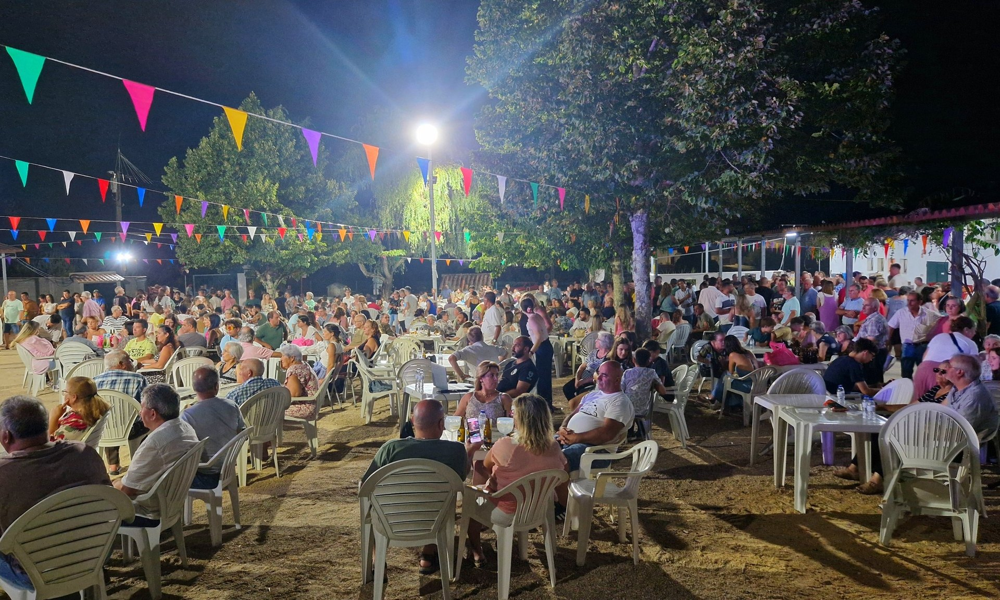
Convívio, sabores e música
A página da Festa da Ferraria foi atualizada com fotografias reais do evento, o ambiente do recinto, o jantar, o bar e o passeio de motorizadas.
Jantar de frango assado no carvão, servido num ambiente familiar e de grande convívio.
Arroz doce e felhós preparados pelo clube para manter viva a tradição da aldeia.
As rifas ajudam a dinamizar a festa e a apoiar as atividades do clube ao longo do ano.
Bebidas, refrigerantes e bebidas brancas disponíveis no recinto, com consumo responsável.
Música ao vivo, artistas convidados e animação para trazer energia ao recinto.
O clube também organiza o Passeio de Motorizadas, juntando participantes e público.
Programa da festa
A estrutura fica pronta para atualizar todos os anos com cartaz, artistas, horários e preços. O conteúdo abaixo mostra o tipo de programação que a Festa da Ferraria costuma reunir.
Horários e nomes dos artistas devem ser ajustados quando sair o cartaz oficial de cada ano.
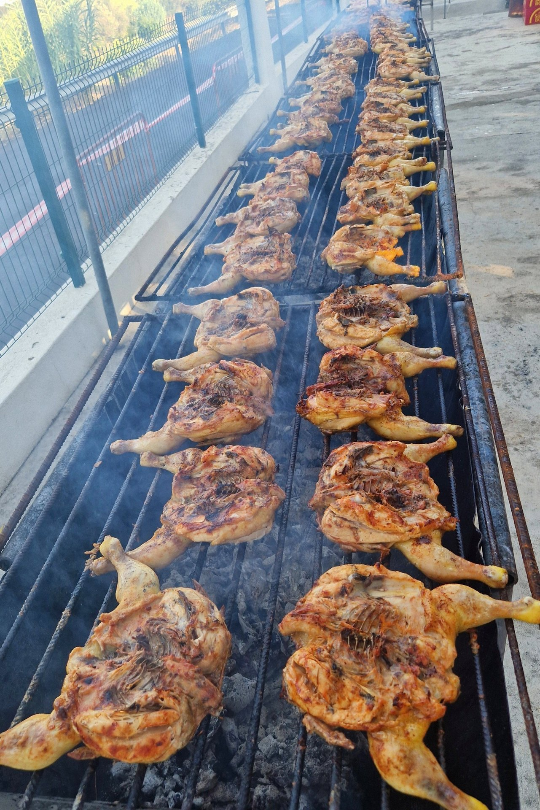
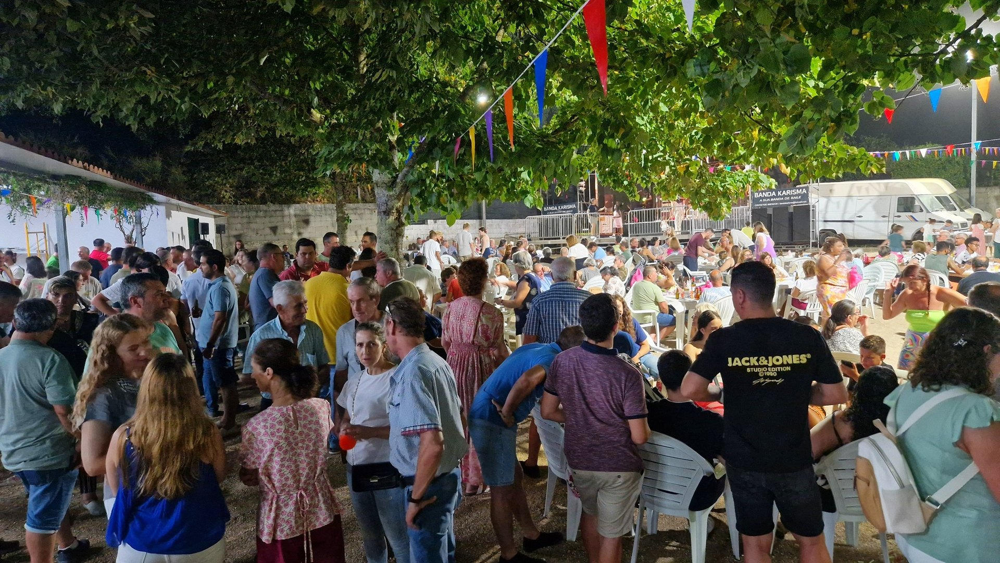
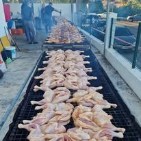
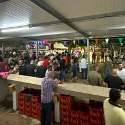
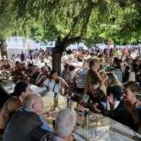
Sabores da casa
O cheiro do frango assado, as mesas cheias e a ajuda dos voluntários dão identidade à noite. Além do jantar, o clube mantém a tradição dos doces, com arroz doce e felhós, e uma zona de bar preparada para acompanhar a festa.
Atividade do clube
Além da festa, o clube dinamiza o Passeio de Motorizadas, com inscrições, pequeno-almoço, saída do percurso, reforço e almoço de entrega de prémios.
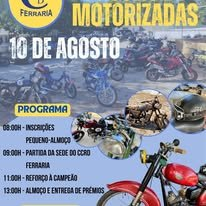
Cartaz de divulgação com programa do passeio, concentração, partida e entrega de prémios.
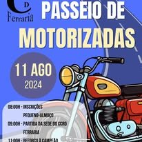
Registo do passeio de motorizadas, integrado nas atividades sociais e desportivas do clube.
Galeria
Imagens reais do convívio, jantar, bar, recinto e ambiente noturno da festa.
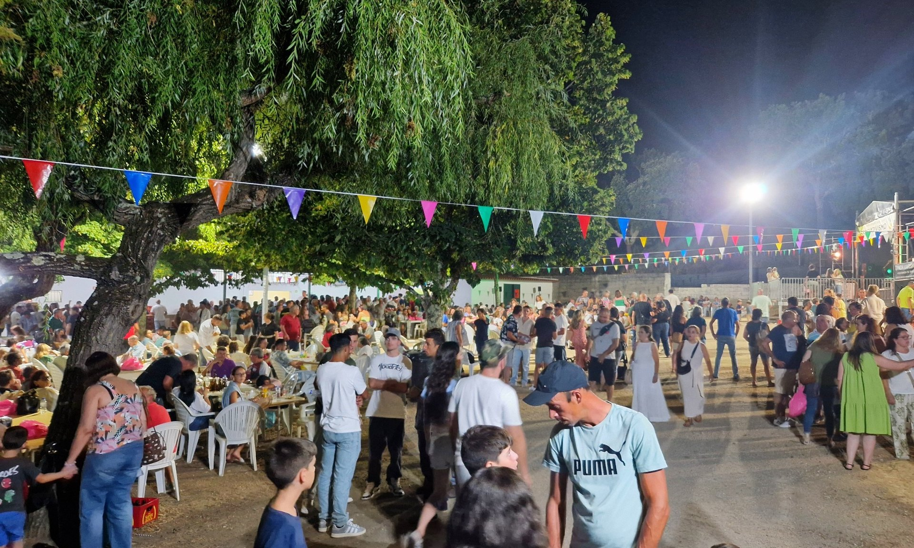
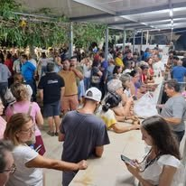
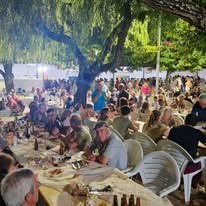
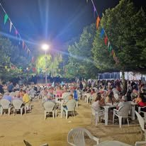
Desde as origens
Antes do Raid e antes de muitas das secções atuais, a coletividade nasceu da vontade de organizar as Festas de Verão. Esta página reforça essa raiz: comunidade, cultura, desporto, voluntariado e orgulho na Ferraria.
Atualização anual
Quando sair o cartaz oficial, basta trocar a imagem, horários, artistas, preços e fotografias. O layout já está pronto para as próximas edições da Festa da Ferraria.